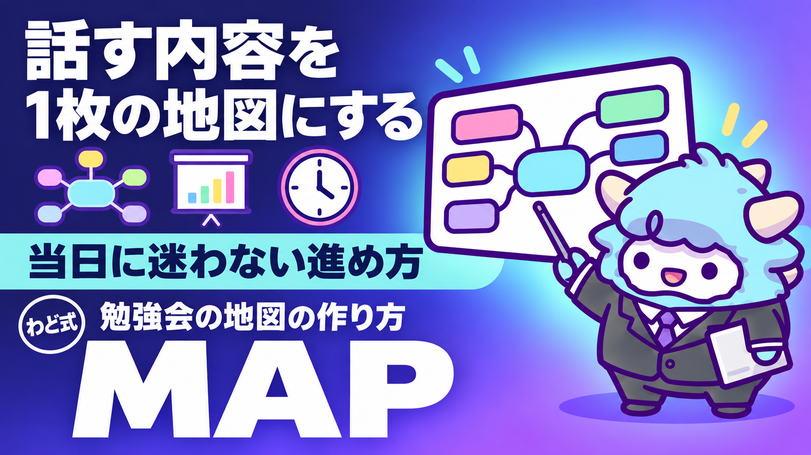

勉強会・セミナーの地図の作り方
90分を1枚のマインドマップで回す型と、当日の削り方
このページが特典の本体です。下へスクロールして使ってください勉強会・セミナーの地図の作り方
90分〜120分の勉強会・セミナーを、迷わず・時間内に・言いたいことを全部話して終えるための「1枚の地図」の作り方です。地図の型・書き方の順番・出す前のチェックまで、このページだけで一通り回せます。
はじめに
わどです。
「勉強会を開いたけど、時間が押して肝心なところが飛んだ」「話す内容は決めたのに当日は思いつきで喋ってしまった」。AIマネタイズの初期にコンテンツ商品を作り始めた人がほぼ全員通る道です。わども同じ失敗を何度もしました。
原因ははっきりしています。台本を厚くしても実行率は上がらないからです。当日は緊張して台本を上から読み上げるモードに入ります。そのモードでは、注意書きや「ここは短く」のメモは目に入っても、手も口も止まりません。
だから必要なのは「精巧な台本」ではなく「地図」です。地図なら、話しながらでも「今どこにいるか」「何を削れば時間内に収まるか」が一目で分かります。この特典は、地図を毎回ゼロから考えずに作れる型と、AIに骨組みを作らせるプロンプト、出す前の品質チェックをひとまとめにしたものです。
対象は、noteやBrainの記事販売に向けたミニ講座、Instagramのライブ配信、Xスペース、月例勉強会など「人前で話して伝える」機会がある人すべてです。
この特典の進め方
- まず「本体の章」（1〜6）を通しで読んでください。「2. つくり方の手順」と「3. 指示書・シートの全文」は手を動かしながら読むのがおすすめです。
- 「よくある失敗7つと直し方」で、自分が過去にやった失敗に丸をつけてください。
- 地図テンプレートと「最初に投げるプロンプト」をコピーし、次回の勉強会・セミナーで実際に1本作ってみてください。
- 「出す前の品質チェック（10項目)」で自己採点し、赤信号の項目だけ直してから当日を迎えてください。
このページの本文はそのままNotionにコピーして保管できる形にしてあります。地図テンプレートとプロンプトはコードブロックのまま、Claude・ChatGPT・Geminiのどれに貼ってもそのまま動くように書いています。
最初のゴール（今日やる1つ）
次に人前で話す予定を1つ思い浮かべて、日付・タイトル・話す時間の長さの3つだけを紙かメモアプリに書き出してください。それだけで十分です。地図の中身は後で埋めます。今日は「地図を作る対象を1つに決める」ところまでで終わりにしましょう。
1. 何を任せるか（人とAIの線引き）
地図づくりは「考えること」と「整えること」に分かれます。これを間違えると、AIに丸投げして中身のない地図ができます。
人が決めること（AIに任せない）
- 何を話すか、何を話さないか（内容の取捨選択）
- どの話から始めるか、物語の順番
- 時間が押したときに「どの部分を削るか」の優先順位
- 参加者に見せてよい実績・数字・言い切っていい表現かどうかの判断
- 「言わせたくない内容」を地図から完全に消すかどうかの最終判断
AIに任せてよいこと
- 決まった型（見出しの深さ・時間配分の器・チェック項目）に沿った骨組みの生成
- 書き上げた地図が型からズレていないか（見出しの数と実際のノード数が合っているか、記号の使い方が統一されているか)の機械的なチェック
- 進行表・配布用テンプレート・確認リストなど、地図と対になる付属物の下書き
判断基準はシンプルです。「間違えると参加者に迷惑がかかる、または信用を落とす」ことは人が決める。「間違えても書き直せば済む」ことはAIに投げる。地図づくりで一番時間を取られるのは「型に沿って整える」作業なので、そこを渡すだけで負担は大きく減ります。
2. つくり方の手順
地図は次の5つの手順で作ります。順番を守ることが一番のコツです。特に「3. 中身を書く」の中の執筆順を守らないと、後から書いた部分が薄くなりがちです。
手順1: 決めておくことを先に埋める
地図を書き始める前に、次の6つを紙に書き出してください。
- 日付・タイトル・開始時刻
- 話し手（自分だけか、ゲストを呼ぶか)
- 前回の資料をどう扱うか（そのまま参照として残す／要点だけ接続する／今回は使わない)
- 参加者からのアウトプット(感想・成果物)をどこに集めるか
- 最新の情報を紹介する時間を作るか、作らないか
- ゲストを呼ぶ場合、確認しておくべきこと(話してよい実績の範囲、配布してよい資料の範囲)
ここが埋まっていないまま骨組みを作り始めると、後から全部書き直すことになります。
手順2: 骨組みを作る
決まった型（後述の地図テンプレート）をコピーし、日付・タイトル・時間配分の空欄だけを埋めます。この段階では中身は書かず、「何を書くか」の箱だけを用意します。
手順3: 中身を書く(執筆の順番が重要)
次の順番で書いてください。
- 一番伝えたい核となる話(今日絶対に伝えたい2つのテーマ)から書く。ここが薄いと会全体が薄くなります
- オープニング・「なぜ今このテーマか」・クロージングを書く。オープニングとクロージングで聞く質問は必ず同じ文にします(理由は後述)
- 現在地の共有・前回との接続・想定質問への回答・持ち帰り資料(お土産)を書く
- 最後に、地図全体の「進行の地図」部分(今日絶対にやる4つ、進み方、時間が押したときに削る順番)を書く
逆の順番で「進行の地図」から書き始めると、中身が固まる前に枠だけ決めることになり、当日ズレが生じます。
手順4: 検査する
書き終えたら、次の3点を機械的に確認します。
- 見出しの数と、実際にできあがった箇条書きの項目数が一致しているか
- 丸で囲んだ数字や、内部の資料名・ファイル名がそのまま残っていないか
- 時間配分を全部足したときに、想定している会全体の時間に収まっているか
ここは完全にAIに任せてよい作業です。「最初に投げるプロンプト」にこの検査まで頼む指示を入れています。
手順5: 付属物を仕上げる
進行表(時計を見るタイミングを3回だけに絞ったもの)、提出用の1枚シート、資料の一覧の3点を用意して完成です。
3. 指示書・シートの全文
ここからは、実際にコピーして使える地図のテンプレートです。見出しの深さ(#の数)がそのまま地図の枝の深さになります。番号や記号を崩さずコピーしてください。
# (テーマ名)（日付 曜日 開始〜終了・話し手）
## 0. 今日の地図
### 今日絶対にやる4つ
#### A. (核となる話1の名前)（開始時刻から◯分）
#### B. (核となる話2の名前)（開始時刻から◯分）
#### C. 質疑応答（開始時刻から◯分）
#### D. 締めの振り返り→感想の提出→次回の告知（開始時刻から◯分）
##### 締めの振り返りは告知より前に置く（告知の後ろは終了の空気に飲まれて実行されない）
### 今日の進み方（時計を見るのは3回だけ）
#### 1. オープニング（◯分）
#### 2. なぜ今このテーマか（◯分）
#### 3. 現在地の共有（◯分）
#### 4. 核となる話1（◯分）
#### 5. 中間の話（◯分）
#### 6. 核となる話2（◯分）
#### 7. 前回との接続（◯分）
#### 8. 質疑応答（◯分）
#### 9. クロージング（◯分）
### 時間が押したとき短くする順番（枝の名前を具体的に指す）
#### 1番目に削る: 現在地の共有
#### 2番目に削る: 中間の話の後半
#### 3番目に削る: 前回との接続
#### 削らない: 核となる話1／核となる話2／質疑応答／クロージング
### 今日の約束
#### 具体の金額・到達期間を断定しない
#### 参加者個人の実績や名前は出さない
#### 数字は出典があるものだけ話す
#### 結果は保証しない
## オープニング（◯分）
### 名乗りと今日のゴールの1文
### 開始直後の自己採点「(テーマ)への自信、10点満点で何点？数字だけチャットへ」
### 今日話さないことの宣言（この地図に載っていないことは話さない）
## 1. なぜ今このテーマか（◯分）
### 一番大事な理由
### 今日の位置づけ
## 2. 現在地の共有（◯分）
### 最新の出来事（出典と確認した日付を添える）
### 締めの1行
## 3. 核となる話1（◯分）
### 狙い（誰の何を動かす話か）
### 型・手順
### 実演の範囲
### 参加者に手を動かしてもらう時間
#### 成果物をチャットへ（3つ並んだら次に進む）
## 4. 中間の話（◯分）
### 内容
## 5. 核となる話2（◯分）
### 内容
### 明日やる最初の一歩を1つ添える
#### 成果物・宣言をチャットへ
## 6. 前回との接続（◯分）
### 前回に譲る話題（詳細は前回資料へ、の1行だけ）
## 7. 質疑応答（◯分）
### 締切5分前に「あと5分で締めます」と口に出す
## 8. クロージング（◯分）
### 自己採点（オープニングと同じ問いをもう一度)
### 点数が動いた理由を1行で
### 明日やる最初の一歩
### 感想・成果物の提出
### 次回の告知(締切が近い順)
## 9. 持ち帰り資料
### 今日使ったプロンプト全文
### 出典一覧（確認した日付つき）
このテンプレートをコピーしたら、次の5つのチェックだけ守れば型として成立します。
- 見出しの深さが箇条書きの深さと一致している(見出しを崩すと構造が壊れます)
- 「今日絶対にやる4つ」の全部に、開始時刻とかかる分数がついている
- オープニングとクロージングで聞く自己採点の質問は一言一句同じ
- 時間が押したときに削る順番は、枝の名前を具体的に書く(「押したら跳ぶ」ではなく「これとこれを削る」)
- 参加者に見せる版には、社内でしか通じない用語・資料のファイル名・内部の管理番号を残さない
4. 運用の型（週次の見直し）
地図は1回作って終わりではありません。毎回、実際にやった結果と比べて型を直します。継続して勉強会・セミナーを開くなら、次の3つを回すだけで質が上がっていきます。
1. 実際にかかった時間を記録する
想定時間と実際の差を、開催のたびに記録してください。差が続けて出る場所(たとえば質疑応答が毎回想定の2倍かかる、など)は「余り時間で拾うもの」ではなく「最初から枠を確保するもの」に設計し直します。
2. 同じ失敗が2回続いたら、注意書きではなく削除で対処する
「言ってはいけないと分かっていて、当日また言ってしまった」失敗が2回続いたら、注意書きを足すのはやめてください。地図からその枝ごと削除するのが唯一効果があった対処です。地図に無ければ、読み上げる対象になりません。
3. 専用の枠を切ったものだけが実行される
「今日はこの話も入れたい」と思ったら、既存の枝に付け足すのではなく、独立した時間の枠を切ってください。埋め込んだ内容は、時間が押すと真っ先に飛ばされます。短くても専用の枠として切ったものは、ちゃんと話されます。
この3つは何回も開催して分かった経験則です。1回目からうまくいく必要はなく、2回目、3回目で直せば十分です。
5. 最新AI（2026年9月時点）での変わり目
2026年9月3日、OpenAIが新しいモデル「GPT-6 Astra」を発表しました（取得日 2026-09-06）。目玉は、画面の情報を読み取って実際に操作する「コンピューター操作」の能力です。PC操作のベンチマークでは前世代の65.7%から72.6%に上がったと報告されています（出典: 業界紙の報道・取得日 2026-09-06。一次発表元は確認中のため目安として扱ってください）。
これが地図づくりとどう関係するかというと、見出しの数が合っているか・記号が崩れていないかを確認する『検査』の工程が、より画面操作に近い形でAIに任せられる方向に向かっている、ということです。ただし2026年9月時点ではまだ段階的な提供中で、使える範囲はアカウントによって違います。決めつけず、まずは手元で試してから判断してください。
一方で「何を話すか」「何を削るか」「参加者にどう見せるか」の判断は、この先も人が持ち続けます。AIの能力が上がるほど、1章で説明した線引きの重要性は増していきます。
すでにClaude Codeを使い始めている方は、地図テンプレートと次章のプロンプトをそのまま貼って動かせます。まだ環境を作っていない方は、別の特典「Claude Code 最初の30分」から始めてください。検査や骨組み生成を任せる相手を育てたい場合は、別の特典「AI社員1人目」も参考になります。
6. 次の一手
この特典は、AIマネタイズの「稼ぐ順番」でいうとSTEP3(SNS・ローンチ)に当たる道具です。すでに何かを売った経験があり、継続的に人を集めて発信していく段階の人が使うと一番効きます。
自分の状況にどう当てはめればいいか迷ったら、面談では、あなた専用の1枚(特注のロードマップ)を一緒に作ります。
最初に投げるプロンプト
次のプロンプトを、Claude・ChatGPT・Geminiのどれかに貼ってください。カッコ内を自分の情報に置き換えるだけで、骨組みが出てきます。
あなたは勉強会・セミナーの進行地図を作るアシスタントです。
以下の情報から、Markdownの見出し(#〜######)だけで構成された地図の骨組みを作ってください。
本文（箇条書きの文章）は書かず、見出しの深さだけで構造を表現してください。
【入力】
- テーマ: (ここに書く)
- 日付・開始〜終了時刻: (ここに書く)
- 話し手: (自分のみ／ゲストあり。ゲストの名前と役割)
- 会全体の時間: (例: 120分)
- 核となる話（今日絶対に伝えたい2つ）: (1つ目) / (2つ目)
- 前回の資料の扱い: (参照として残す／接続のみ／使わない)
【出力の条件】
1. 大枝(##)は10〜13個、末端の見出し(全部)は250〜400個の範囲に収める
2. 冒頭に「今日の地図」の大枝を置き、「今日絶対にやる4つ」「今日の進み方」「時間が押したとき短くする順番」「今日の約束」の4つの子枝を必ず含める
3. 「今日絶対にやる4つ」の全項目に、開始時刻とかかる分数を書く
4. オープニングとクロージングで聞く自己採点の質問は、一言一句同じ文にする
5. 質疑応答の時間は、講義部分の余りではなく、最初から独立した枠として確保する
6. 丸数字は使わず、番号は「1.」「2.」の形にする
7. 出力の最後に、時間配分を全部足した合計と、会全体の時間との差を書く
出てきた骨組みに、「3. 指示書・シートの全文」を見比べながら中身を書き込んでください。
よくある失敗 7つと直し方
- 理論から説明を始めてしまう。順番は「体験→種明かし→理論」です。理論が先だと、参加者は聞くモードのまま止まります。
- マイクを常時オープンにする。雑音事故のもとです。基本はミュートにし、「宣言の場面」と「質疑応答」の2箇所だけ声を出してもらいます。
- ツールの紹介を最初に持ってくる。最初にツールを並べると「ツールの説明会」になり、後半で集中力が切れます。順番は「なぜ今か→何をするか→どう進めるか→道具」です。
- 絶対に守りたいことを口頭の注意だけで済ませる。メモに書くだけでは守れません。専用の時間の枠を切ってください。枠を切ったものだけが実行されます。
- 質疑応答を「余った時間で拾うもの」として設計する。この設計だと後半の内容がほぼ確実に飛びます。質疑の枠を最初に確保し、余ったら講義側に戻します。
- 自己採点を告知の後ろに置く。告知の後ろは「もう終わりの空気」に飲まれて実行されません。自己採点は必ず告知より前に置きます。
- 言わせたくない内容を、注意書きや目立つ記号で「言わない」と書くだけで済ませる。台本を上から読むモードに入ると、注意書きは目に入っても発話を止めません。効果があったのは、その部分を地図から削除することだけでした。
安全に使うための注意
- 参加者個人の実績・氏名・成果の数字は、本人が「出してよい」と明確に言ったもの以外は書かないでください。
- 数字を話すときは、出典と確認した日付がある情報だけにしてください。うろ覚えの統計は使わないでください。
- 「必ず結果が出る」といった、全員に同じ結果が起きるかのような言い切りは避けてください。結果は市場や本人の行動によって変わります。
- 録画を配布する場合は、配布範囲(参加者限定か、一般公開か)を事前に決めてから開催してください。
- AIに地図の下書きを作らせる際、参加者の個人情報や未公開の内容をそのまま貼り付けないでください。テーマと構成だけを渡せば十分です。
- ゲストを呼ぶ場合は、話してよい実績の範囲・配布してよい資料の範囲を事前に本人へ確認し、確認できていない部分は当日話さないと決めておいてください。
つまずいたときに聞くプロンプト
「なんだか長すぎる」「時間内に収まる自信がない」というときは、次のプロンプトを使ってください。
以下は勉強会・セミナーの地図(Markdownの見出しのみ)です。
この地図を検査して、次の3点を教えてください。
1. 見出しの深さと、実際にできあがっている項目数(##〜######すべて)の数
2. 各大枝(##)に書かれている分数を全部足した合計と、会全体の想定時間との差
3. 「時間が押したとき短くする順番」に、具体的な枝の名前が書かれているか、それとも「押したら跳ぶ」のような抽象的な書き方になっているか
差が大きい場合は、どの大枝を削るのが自然か、理由つきで3つ提案してください。
【地図】
(ここに地図の本文を貼る)
用語集
- 大枝: 地図の中で最も大きなまとまり(見出しの
##にあたる部分)。1つの話題の単位です。 - 骨組み: 中身をまだ書く前の、見出しの構造だけができた状態の地図。
- 削り順: 時間が押したときに、どの大枝から順番に削るかをあらかじめ決めておくリスト。
- 絶対にやる4つ: 核となる話2つ・質疑応答・締めの振り返り。何があっても最後まで実施する4項目。
- 自己採点: オープニングとクロージングで同じ質問を投げて、参加者自身の変化を数字で見せる仕組み。
- 参照大枝: 前回・過去の資料をそのまま残しておくための、地図の末尾に置く大枝。当日は基本的に開かない。
- 進行表: 地図とは別に、当日の時計を見るタイミングをまとめた運営用のメモ。
出す前の品質チェック（10項目）
- 大枝の数はおおよそ10〜13個、末端の見出しの数はおおよそ250〜400個の範囲に収まっているか
- 講義部分の合計時間＋質疑応答＋クロージングが、会全体の想定時間に収まっているか
- 「今日絶対にやる4つ」の全項目に、開始時刻とかかる分数がついているか
- オープニングとクロージングの自己採点の質問が、一言一句同じ文になっているか
- 自己採点(クロージング側)が、告知よりも前に置かれているか
- 「時間が押したとき短くする順番」が、具体的な枝の名前で書かれているか
- 丸数字・ローマ数字を使っていないか(番号はすべて半角の「1.」「2.」)
- 社内・自分の管理用の資料名やファイル名、参加者に見せる必要のない内部の言葉が残っていないか
- 使っている数字はすべて出典があり、確認した日付が添えられているか
- 参加者が手を動かす場面(チャット投稿・自己採点など)が、講義時間の中でおよそ15分に1回のペースで設計されているか
10項目すべてに丸がつけば、そのまま当日を迎えて大丈夫です。丸がつかない項目は、該当する章に戻って直してください。
最終チェックリスト
- [ ] 「決めておくこと」6項目(日付・話し手・前回資料の扱い・提出先・最新情報枠の有無・確認事項)をすべて埋めた
- [ ] 地図テンプレートをコピーし、執筆の順番(核となる話→オープニング・クロージング→現在地・接続・質疑→進行の地図)どおりに書いた
- [ ] 「最初に投げるプロンプト」で骨組みをAIに作らせ、自分の中身に書き換えた
- [ ] 「よくある失敗7つ」を見て、自分が当てはまる項目に対策を入れた
- [ ] 「安全に使うための注意」を確認し、実績・数字・個人情報の扱いに問題がないか見直した
- [ ] 「出す前の品質チェック(10項目)」で自己採点し、10項目すべてに丸がついた
- [ ] 進行表・提出用シート・資料一覧の3点を用意した
- [ ] 開催後、実際にかかった時間と想定時間の差を記録し、次回の型に反映する準備をした